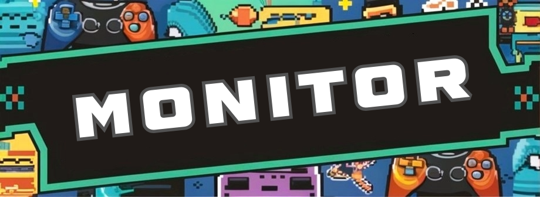

|
 |
 |
 |
 |
 |  |
Se trata de una tendencia en la que equipamientos, herramientas y elementos de tu espacio de trabajo o juego se ordenan de manera especial, parar crear un lugar único en el que te sientas cómodo y tengas todo lo necesario para desempeñar tu labor.
Ejemplos de setup
"setup de oficina"
La palabra setup gaming significa disposición y/o configuración para jugadores. Este significado, aplicado al mundo gaming, hace referencia a la configuración del hardware del ordenador del jugador y todos los periféricos. En dicha configuración, se incluyen todos los elementos que el jugador necesita para obtener una óptima experiencia de juego, tales como: las alfombrillas gaming, el teclado y el ratón, la tarjeta gráfica, la memoria RAM o el disco duro, por poner algunos ejemplos de los elementos gaming más representativos. Hay gamers que van un paso por delante e incluso disponen todos estos elementos en una habitación perfectamente diseñada para jugar a sus videojuegos preferidos, muchos jugadores añaden leds a su setup gaming, para que la experiencia sea mucho más inmersiva y completa.

Muchas de estas marcas se centran en los periféricos para videojuegos,
un mercado en crecimiento que demanda constantemente accesorios innovadores y de alta calidad.
Aquí es donde marcas como Logitech, Razer o HyperX centran su atención y donde compiten por el título de
mejor marca de periféricos para PC.